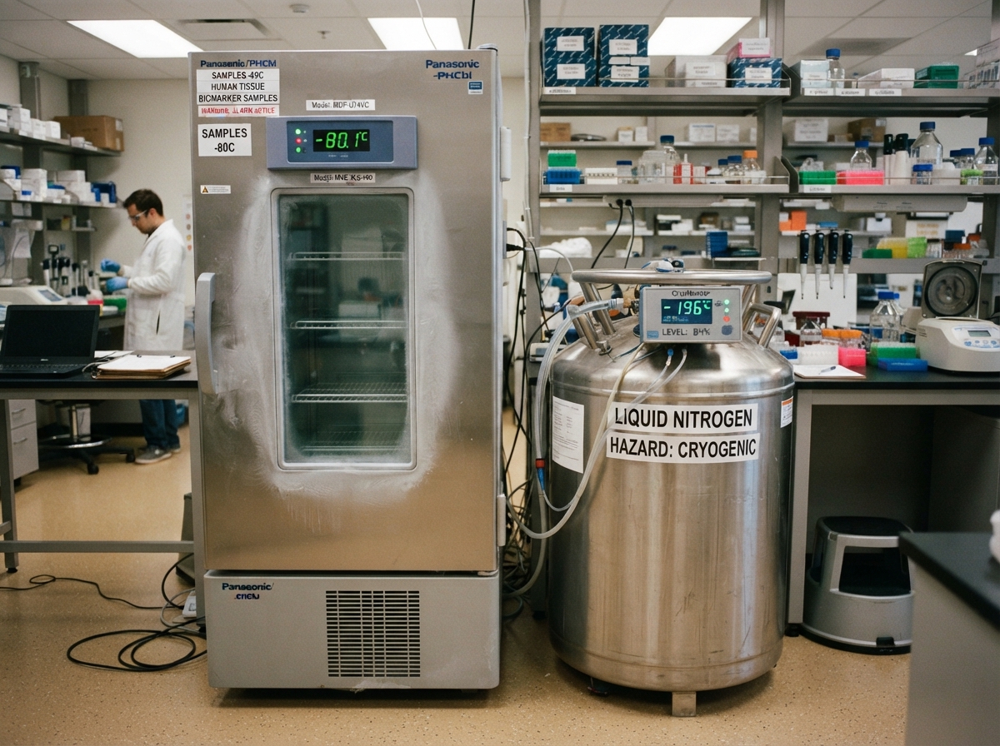

FOR PARTICIPANTS
Taking part in TMC
Learn about the cohort and find current information for participants and screening visits.
Participant information ↗The Malaysian Cohort is a long-term national study bringing together health information and biospecimens to support research into the health of Malaysia’s population.
Project description based on the UKM introduction.
 Illustrative concept image
Illustrative concept imageUseful starting points for participants, researchers, and visitors. Services continue on approved UKM pages.
Learn about the cohort and find current information for participants and screening visits.
Participant information ↗Use UKM’s existing information page for results, feedback, and follow-up guidance.
Results information ↗Discover the biobank, current research information, and how to contact the TMC team.
Biobank & research →This preview does not collect MyKad numbers, display health results, book appointments, or provide staff access.
Research grows stronger when people, knowledge, and samples can be studied together over time.
UKM describes The Malaysian Cohort as a national project with health information and biospecimen samples from more than 100,000 participants. It is part of the Asia Cohort Consortium.

Illustrative concept imageThe TMC biobank stores biospecimens and associated health data for testing and research. UKM’s current site provides the authoritative information about its facilities and equipment.
BiospecimensBlood, urine, and other samples described by UKM
Research informationCurrent projects and publications on UKM pages
Search the selected links below. Each resource opens on the current UKM website.
No matching resources. Try another term.
For appointments, research enquiries, or feedback, use the contact details and channels on the official UKM site.
Official enquiries page ↗